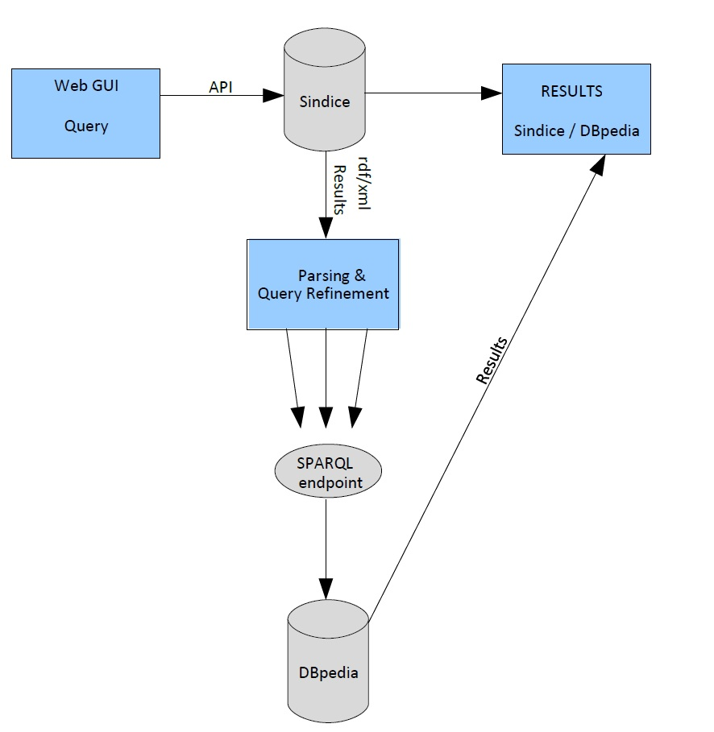

description:
A semantic web meta-search engine, Based on Sindice semantic
search engine and DBpedia sematic web repository. It is build to
demonstrate the capabilities of the semantic web.
architecture
Designed to utilize already existing systems like Sindice and
DBpedia (with gray color) utilized by and augmented upon by linker
structures (with blue color).

functionality:
Linker uses the Sindice.com API to search for terms.
from these terms we look out for dbpedia links and use them to query
dbpedia with SPARQL through its endpoint (www.dbpedia.org/sparql).
The results are displayed whith the
links of reference and the comments of the relevant terms as described
in dbpedia.
example:
We ask for a term; in this case "Juventus".
we see that a disambiguity page (from dbpedia) is shown, where the terms can be better defined. Along with that a list of links directing to their addresses.

In the search box
we better define the term that we want to search by specifying the
dbpedia ontology and class person.
With the new
specifications the query changes the returned results tailoring them
more to our request, returning People related to Juventus.

Again
the search specifications are changed to foaf ontology (about social
media terms) and loolk for an agent of an organization.
The hits are different. Returning mostly blogs and websites.